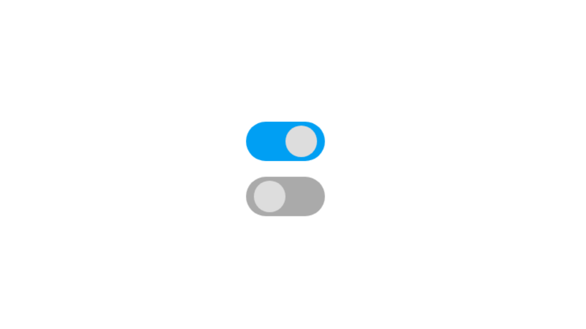

Simple Toggle Button
Most of the time we use JavaScript to make custom checkbox, toggle switch button etc.. But in this post we will see how to create a toggle switch button using HTML Checkbox element and CSS without using JavaScript.